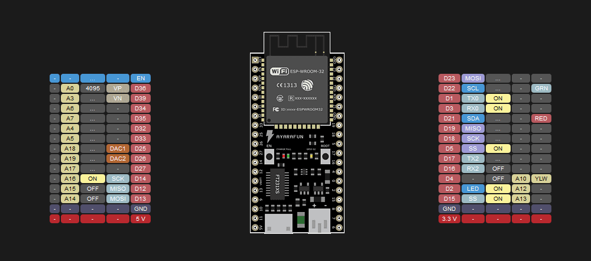
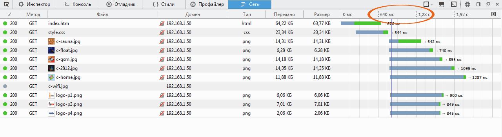
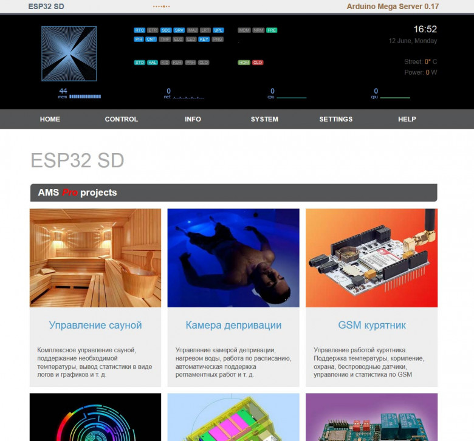
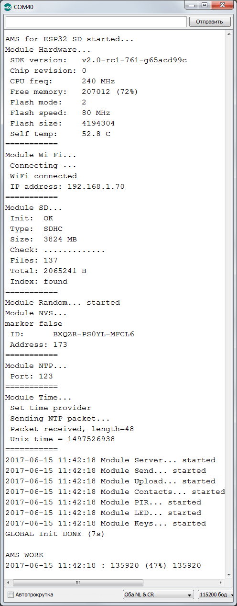
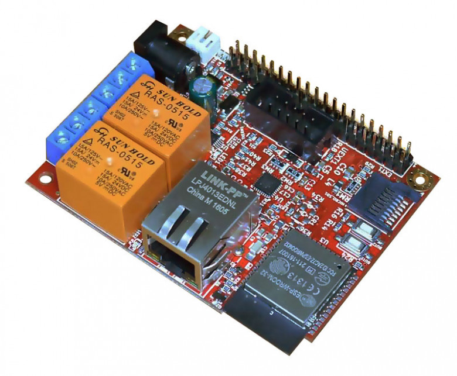

ESP32 и Ардуино
8 мин187K
Компьютерное железоУмный домИнтернет вещейDIY или Сделай сам
Случилось то, чего все так долго ждали и о чём так много говорили — новые модули ESP32 стали широко продаваться и пошли в народ. Сегодня мы поговорим об этих модулях с точки зрения непрофессионального пользователя, привыкшего работать с Ардуино и создавать небольшие проекты для домашней автоматизации или просто для удовольствия и самообучения.
Работает ли это вообще? Что там с поддержкой этих модулей в Arduino IDE? Стоит ли платить больше или лучше ограничиться ставшим уже привычным ESP8266? Мы постараемся вместе ответить на все эти вопросы, а в конце статьи я дам ссылку на реальное воплощение работы ESP32 с Ардуино — дистрибутив бесплатной версии Arduino Mega Server для платформы ESP32.
Спецификации
Я не буду здесь подробно останавливаться на спецификациях ESP32, вы без труда найдёте их в Интернет: каждый обзорщик считает своим долгом привести простыню спецификаций в начале обзора ESP32. Скажу только, что они впечатляют и если подходить к делу серьёзно и вдумчиво, то можно потратить не один год на изучение всех возможностей модуля и эксперименты с ним.
Оставим это профессионалам (или тем, кто считает себя таковым) и сосредоточимся на практической стороне вопроса, понятной и доступной простому смертному.
Цена вопроса
Начнём с цены. На данный момент модуль ESP32 в китайских интернет-магазинах стоит 350 рублей и 500 в варианте платы с обвязкой и USB интерфейсом. Это против 100 и 160 рублей для модуля ESP8266, соответственно. Как видим, разница в три с лишним раза, хотя абсолютные значения невелики, каждый, при желании, может позволить себе потратить 350 — 500 рублей на микроконтроллер. Для сравнения, Arduino Mega 2560 в том же Китае стоит 600 рублей, а в России около 1000 (плюс ещё стоимость Ethernet Shield).
Осталось только выяснить, стоит ли платить в три раза больше, чем за ESP8266 и что мы за это получим. (Забегая вперёд скажу, что на мой взгляд, безусловно стоит.)
Поддержка в Arduino IDE
Для того, чтобы что-то сделать с модулем, нужно сначала иметь его поддержку в Arduino IDE. На данный момент поддержка ESP32 в Arduino IDE находится хоть и на начальном, но вполне приличном и работоспособном уровне. Те, кто боится встретить тут непреодолимые трудности, может не беспокоиться — основные функции работают нормально и вы, скорее всего, не заметите никакой разницы по сравнению с работой на других контроллерах.
Несколько хуже дела обстоят с драйверами устройств, но это, безусловно, временное явление. Модуль настолько популярен, что поддержка любой периферии неизбежно появится в ближайшее время.
Добавление поддержки ESP32 в Arduino IDE
Теперь немного практической информации об инсталляции поддержки ESP32 в Arduino IDE. Интернет полон инструкциями на эту тему, вы их также можете в изобилии найти в нём. Замечу только, что все инструкции делятся на «старые», там, где упоминается Python и «новые», где упоминается GIT. Вам, естественно, нужно руководствоваться новыми.
Из множества инструкций лучшей можно назвать (как это ни странно) официальную инструкцию от производителя модуля.
github.com/espressif/arduino-esp32
Которой я и рекомендую пользоваться. Единственное замечание: GIT использовать необязательно, можно просто скачать дистрибутив и распаковать его в нужную директорию.
Примечание. Все нижеизложенное касается инсталляции под Windows 7 64-bit, поскольку все эксперименты я производил именно на ней, в других операционных системах пути могут отличаться от указанных.
Файлы дистрибутива должны находиться в папке
C:\Users\User\Documents\Arduino\hardware\espressif\esp32
где C: — это имя вашего диска с Windows, а User — это имя пользователя в операционной системе (и то и другое у вас может отличаться от указанных).
Неочевидные моменты инсталляции ESP32
Многие пользователи жалуются, что у них ничего не работает и не появляется поддержка ESP32 в Arduino IDE. Тут дело вот в чём: поскольку драйвера ESP32 только разрабатываются, то несколько изменён порядок расположения системных директорий. В качестве папки для расположения скетчей в настройках Arduino IDE должна быть указана папка
C:\Users\User\Documents\Arduino
(с теми же поправками на диск и имя пользователя), а файлы дистрибутива должны располагаться внутри этой папки так, как рекомендует производитель. Если не будет учтён этот момент, то поддержка ESP32 в Arduino IDE не появится и ничего работать не будет.
Версии Arduino IDE
Часто приходится слышать, что поддержка ESP32 есть только в последних версиях Arduino IDE, это не так — ESP32 прекрасно работает в более ранних версиях, например, дистрибутив Arduino Mega Server для ESP32 разрабатывался в версии 1.6.5 r2.
Преимущества ESP32
Теперь поговорим о преимуществах ESP32 перед его предшественником, ESP8266. На таких очевидных вещах как мощность процессора и объём оперативной памяти я останавливаться не буду, скажу только, что нужно сильно постараться, чтобы загрузить ESP32 полностью на задачах DIY и домашней автоматизации.
Пины
Ахиллесовой пятой его предшественника, модуля ESP8266, было (и есть) экстремально малое количество выводов. После работы с такими контроллерами как Arduino Mega и Arduino Due с их десятками цифровых и аналоговых пинов, работа с ESP8266 вызывает недоумение: счёт GPIO идёт буквально на единицы и это сильно ограничивает применение этого модуля в реальных проектах.

ESP32 если не полностью, то в значительной степени лишён этого недостатка. Количество доступных выводов значительно увеличено, появилось также множество аналоговых входов. Полностью свободными и доступными для использования можно назвать 13 выводов
GPIO 2, 4, 12, 14, 13, 15, 16, 17, 25, 25, 27, 32, 33
В случае необходимости к ним можно добавить ограниченно функциональные и работающие только на вход
GPIO 34, 35, 36, 39
Если пожертвовать некоторыми возможностями и не использовать в конкретных проектах Serial, SPI или I2C, то к этому числу можно добавить ещё 8 пинов
GPIO 1, 3, 5, 18, 19, 21, 22, 23
Ну и возможно удастся использовать ещё 6 выводов, которые предназначены для работы с внутренней флеш-памятью (например, если подключить внешнюю SD карту)
GPIO 6, 7, 8, 9, 10, 11
Как видим, с ESP8266 нет никакого сравнения — новый модуль выглядит просто отлично по количеству возможных подключений и это очень ценно в реальных проектах, в которых дорог каждый пин.
Скорость работы
Я уже упоминал мощный процессор, теперь несколько слов нужно сказать о скорости сетевой работы. Я затрудняюсь сказать с чем это связано, возможно с мощным процессором, возможно с оптимизацией сетевого стека, но модуль ESP32 под управлением Arduino Mega Server показал рекордную сетевую производительность.

Загрузка страницы с объёмным кодом CSS и JavaScript и обилием графики занимает всего одну с небольшим секунды — быстрее, чем на любом другом протестированном контроллере, включая проводные контроллеры с W5100 и W5500 Ethernet интерфейсом.
Применительно к Arduino Mega Server это снимает все ограничения на использование графики и любых JavaScript библиотек как по размеру, так и их количеству.
Прочие достоинства
ESP32 это чрезвычайно высокотехнологичное устройство, одно только сухое перечисление доступных возможностей может занять не одну страницу, а перечисление достоинств и возможностей с комментариями займёт целый том. Поэтому я на этом ограничусь, чтобы не загромождать статью и приведу несколько примеров работы с кодом на ESP32 в среде Ардуино.
Примеры работы с кодом
Энергонезависимая память
Это то, что применительно к Arduino Mega мы привыкли называть EEPROM. В ESP32 этой памяти нет как таковой, но у этого модуля есть её аналог и соответствующая библиотека для работы с ней. Называется эта память «NVS» (Non-volatile storage).
Но для нас нет никакой разницы — можно точно так же сохранять значения и читать их после выключения и последующего включения контроллера.
Пример использования. Подключаем библиотеку:
#include <Preferences.h>
Создаём объект prefs
Preferences prefs;
Инициализируем хранилище с идентификатором, например, «nvs»:
prefs.begin("nvs", false);
false относится в выбору режима чтение/запись, в данном случае и чтение и запись. Сохраняем байт под именем «addr»:
prefs.putUChar("addr", 65);
Читаем сохранённый байт:
byte b = prefs.getUChar("addr", 0);
Подобным же образом можно сохранять и читать значения любых других типов данных. Теперь удаляем хранилище.
prefs.remove("nvs");
Если разобраться, то это даже проще, чем работа со стандартной энергонезависимой памятью EEPROM на контроллерах Ардуино.
AnalogWrite()
Ещё одно нововведение, которое может поставить в тупик начинающего пользователя — в ESP32 отсутствует привычная функция AnalogWrite(). В первый момент это очень непривычно, но на самом деле эта функция всего лишь заменена своим более функциональным аналогом.
Рассмотрим пример. Начнём с подключения соответствущей библиотеки, хотя библиотекой в полном смысле слова это назвать нельзя, скорее это специализированный файл с описанием нужных функций. Дело в том, что не все функции присутствуют напрямую в Arduino IDE, часть функций доступна в файлах, находящихся в каталоге
...\Documents\Arduino\hardware\espressif\esp32\cores\esp32
В данном случае нас интересует файл работы с ШИМ и светодиодами, который мы подключаем следующей инструкцией:
#include "esp32-hal-ledc.h"
Далее нам нужно установить номер канала (0), частоту ШИМ (например, 50 Гц) и разрешение (8 бит).
ledcSetup(0, 50, 8);
Номера каналов могут устанавливаться в диапазоне от 0 до 15, а разрешение от 1 до 16 бит. При выборе разрешения 8 бит, диапазон данных, управляющих ШИМ, будет находиться в интервале от 0 до 255.
Далее нам нужно привязать наш канал (0) к какому-либо выводу GPIO, в данном случае к выводу 22:
ledcAttachPin(22, 0);
И нужно не забыть обычным образом настроить 22-й пин на выход.
pinMode(22, OUTPUT);
Всё, теперь мы можем управлять, например, яркостью свечения светодиода, просто указывая номер канала и значение ШИМ (яркости) из диапазона от 0 до 255.
ledcWrite(0, 50);
Прочие примеры кода на ESP32
Дистрибутив Arduino Mega Server, ссылку на который я дам в конце статьи, кроме полностью работоспособной системы являет собой обширный сборник структурированного кода, протестированный и проверенный на работоспособность на модуле ESP32. Вы можете его использовать как обучающее пособие для вхождения в тему программирования под ESP32.
Стабильность работы
Arduino Mega Server для ESP8266 имеет подтверждённые аптаймы в несколько месяцев и демонстрирует абсолютно стабильную работу и у меня нет никаких причин думать, что у модуля ESP32 могут быть какие-то проблемы со стабильностью. По крайней мере за всё время создания дистрибутива AMS для ESP32 я не наблюдал ни единого сбоя или несанкционированной перезагрузки модуля. Всё работает очень чётко и предсказуемо.
Arduino Mega Server для ESP32
Это ещё один представитель экосистемы AMS, включающей в себя контроллеры и платы Arduino Mega, Due, 101, M0, AMS Home, ESP8266, Sonoff, ESP32, OLIMEX ESP32-EVB и т. д. Благодаря мощному процессору и быстрой сетевой работе модуля ESP32, интерфейс Arduino Mega Server содержит обилие графики и скриптов и это никак не сказывается на скорости его работы — страницы загружается почти мгновенно.

Всё работает стабильно и предсказуемо, никаких сбоев или неадекватного поведения системы или модуля не выявлено. Ниже приведён лог загрузки AMS, из которого можно узнать некоторые подробности о системе.

Температура модуля, измеряемая встроенным датчиком температуры колеблется от 50 градусов Цельсия при старте до 55 градусов в процессе работы. Во время работы ток потребления модуля составляет около 130 мА.
Перспективы
Не нужно быть особым экспертом, чтобы предсказать, что сейчас как грибы после дождя начнут появляться платы на ESP32 всевозможных форматов и с разнообразным функционалом. Вот одна из первых ласточек OLIMEX ESP32-EVB, очень интересная плата для которой в ближайшее время выйдет специализированный дистрибутив Arduino Mega Server.

Заключение
Вот, собственно и всё, что я могу сказать о новом модуле ESP32 и его работе с Ардуино. Впечатления он оставляет исключительно положительные, мне по крайней мере, было очень приятно и интересно с ним работать. Немного портит картину отсутствие библиотек для поддержки датчиков и периферии, но это временное явление и вскоре с этим всё будет в порядке.
Скачать дистрибутив Arduino Mega Server для ESP32 вы можете на странице загрузки официального сайта, вскоре там появится и соответствующая документация, а пока вы можете воспользоваться краткой инструкцией из файла readme.txt, находящегося в дистрибутиве.
Теги:
Хабы: